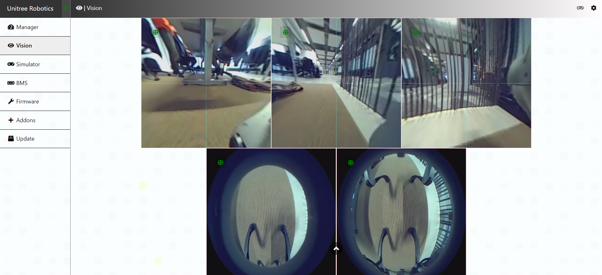

Tactic: Impact
Technique: Eavesdrop
Compromised robots can be used for eavesdropping. When present on a robot, camera or microphone feeds can be seen by unauthorized users.
Technique in practice
Mitigations
Video and audio streams should be encrypted so they cannot be extracted from network traffic.
Detections
A possibility to detect if a robot is used for eavesdropping by an unauthorized user, is by looking for unexpected or suspicious amounts of network traffic.
Video streaming can generate large amounts of UDP traffic. When this traffic is detected and originating from a robot, one should check what the destination of the traffic is.
Ethical Considerations
When using this tactic, one must take into consideration that it might be an invasion of someones privacy.
Depending on the country in which the tactic is used, one should also be aware of laws and regulations regarding making video and audio recordings of other people and that the footage is stored securely.
When eavesdropping is used by an organization like police, they should check if a warrant is necessary.
When recordings are made during eavesdropping, one should be aware of laws like the GDPR when storing these recordings.
Documented incidents with autonomous robots
The Unitree robot has a dashboard where one can see the feed from the robot's camera's. When one has access to the robot, these camera's could be used for espionage.

Documented incidents in other domains
[2022] SIMATIC heap-based buffer overflow